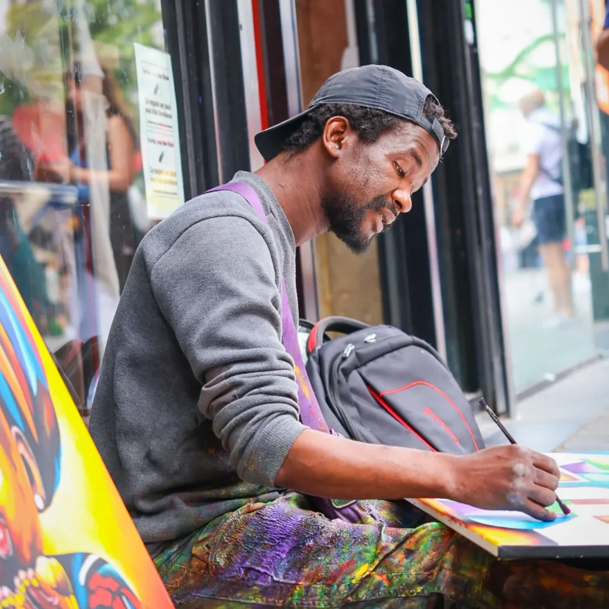

Alpha Oumar Diallo — dit Le Lion Pacifique — mêle dans ses toiles l'influence de Picasso à celle de la culture africaine. Ses oeuvres, vibrantes de couleurs, racontent l'expérience migratoire, la dignité humaine et la quête de liberté.
Il peint dans l'espace public à Bruxelles, rue du Marché aux Poulets. Ses créations sont le reflet d'un combat pour la liberté, pour ceux qui vivent dans l'ombre. Six expositions depuis 2024, de l'Église du Béguinage au Centre Communautaire Maritime.
Les œuvres d'Alpha sont bien plus que des créations visuelles : elles reflètent un combat pour la liberté et la dignité humaine. Chaque toile porte l'histoire d'un homme qui, malgré les épreuves, croit encore en l'amour et en la justice. L'exposition invite chaque spectateur à réfléchir sur la condition des migrants et sur la place de l'art dans un monde en quête de sens.
Alpha, le Lion Pacifique, incarne une résilience hors du commun. Son parcours — marqué par l'exil, la douleur et l'espoir — nous pousse à redéfinir notre conception de la solidarité et de l'empathie. Son exposition au Centre Communautaire Maritime est une invitation à découvrir un art profondément humain, mais aussi à questionner les politiques migratoires et le sens réel de l'égalité et de la fraternité.